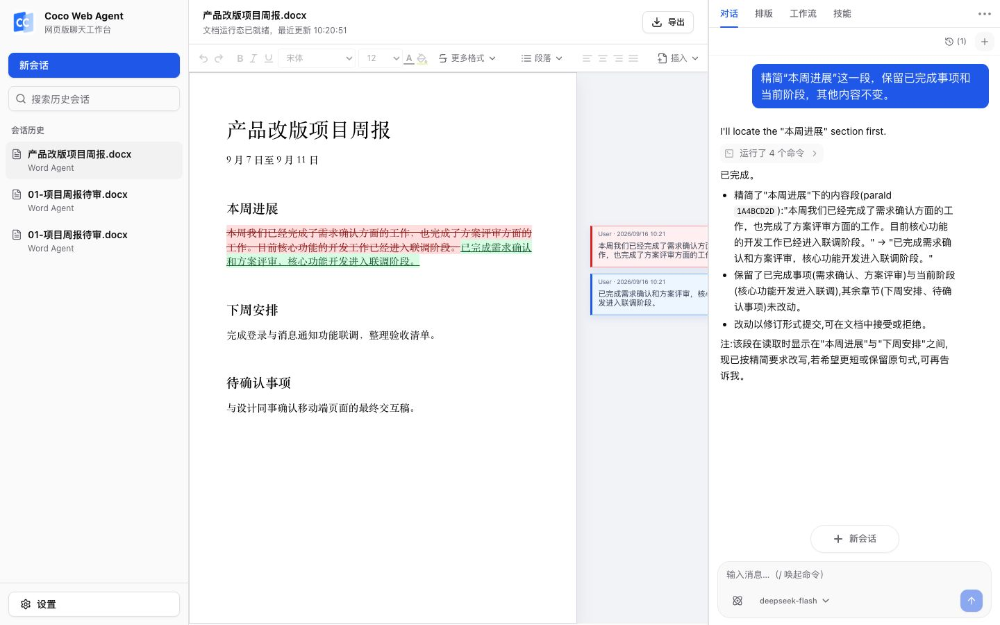

Word 文档
阅读、提炼、改写，也能调整指定内容的文字格式。
“精简第二段，保留日期和数字。”

免费开始登录后含可用额度
浏览器编辑无需安装即可打开文档
逐处核对修改痕迹直接留在原文中
以精简一段周报为例。依次打开文档、说明要求，再回到原文核对结果。
已完成需求确认和方案评审，核心功能开发进入联调阶段。修改以修订形式显示，便于核对。
虚构周报 · 真实执行截图 · 2026 年 9 月本地版本 / deepseek-flash
一份文件，一个明确任务。文字、数据和演示内容，都沿用同一种工作方式。
阅读、提炼、改写，也能调整指定内容的文字格式。
“精简第二段，保留日期和数字。”
读取数值与公式，按类别整理、汇总并核对计算。
“按区域汇总销售额，列出总额。”
查看提纲，精简页面文字，统一术语或起草备注。
“精简第 3 页文字，保留关键数字。”
支持 DOCX、XLSX、PPTX。每次先完成一份文档中的一个明确任务，核对结果后再继续。
关于模型、保存位置和数据处理。
不需要。登录后即可使用 Coco 内置模型，账户内含可用额度；你也可以在设置中添加自己的模型服务，使用对应的 API Key 与额度。
会话与文档状态保存在当前站点的浏览器环境中。更换浏览器或清理站点数据可能影响恢复。
任务相关内容会发送到当前选择的模型服务。使用内置模型时由 Coco 提供的模型服务处理；使用自配置模型时，由对应的第三方服务商处理。